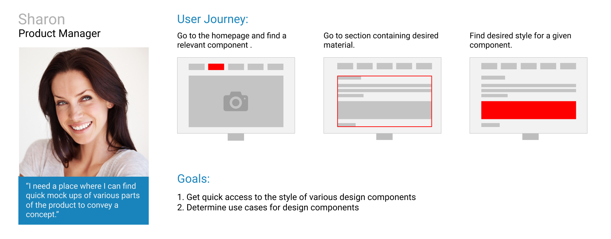
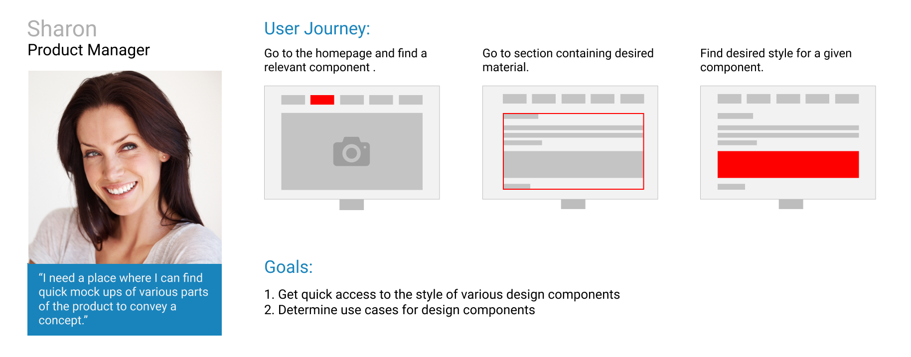

USER TESTING: ASSET TOOLKIT

As their platform grew, User Testing's frontend development team found it difficulty to keep UI styles and components consistent across their product. They hired me to build the Asset Toolkit, a centralized code based style guide for frontend developers to use as a resource when developing the product. The result was a mobile-first website that gave not only developers, but designers and product managers direct access to this information.
My objectives for this project were to:
1. Conduct market research on style guides
2. Administer usability tests to gauge visual and contextual successes and pain points for users
3. Design and iterate on a prototype that represents the goals of the frontend team and resolves major pain points for the user.
4. Code the prototype
I began by speaking with members of the frontend team to gain a complete understanding of the team culture, existing brand, and their expectations for the toolkit. I learned that the team was implementing a new design system and wanted the newer styles to be showcased in the Asset Toolkit. It was important for me to build the Asset Toolkit in a way that visually represented the design system and was scalable for later additions to the design system.
Next I started to interview designers and product managers at the company to understand how they could use this product as well. There was an interest in extending the scope of the project by incorporating more content into the toolkit such as mobile styles. This presented a challenge to me because it seemed that the overall scale of the project could exceed the duration of my internship. After regrouping with the frontend team and reassessing the objectives for the project, it became clear that my goal was to incorporate only desktop design components into the toolkit
I continued to consider the desktop use cases for designers and product managers and initially started out with this list of use cases:
Frontend Developers need to:
1. View code for each design component
2. Know where to find the code internally
Designers need to:
1. See visual representation of each style and component
2. Find specifications of each component
Product managers:
1. Read the use case for each component
After getting a better understanding of each team's needs, I began to research well known and documented style guides in the frontend community. Using the User Testing platform, I conducted user test on these style guides, using designers and developers in the industry as my focus group. The goal of these user tests was to understand:
1. The type of content the user expected to find in a typical style guide
2. The visual expectations users had for a style guide
2. How the company's needs compared to the industry standards

Once I gathered the results from the test, I described the common user patterns, expectations, and pain points back to the frontend team. This allowed us to expand on the initial needs of each user and condense the findings into these three user personas:

 

It was clear that there were three main types of each information that needed to be present on each component page: a visual representation of each element, code to generate that element, and the element's use case. This put a greater emphasis on the organization of style guide because poor organization would jeopardize the overall usability of the product. Following the atomic design structure of User Testing's design system, I created an information architecture diagram for the project.

I finally began to put pencil to paper and start sketching. I made as many sketches as I could for both mobile and desktop devices, leaving no idea untouched even if it seemed out of reach.
I started out with a very broad range of designs..

With the help of the team, I narrowed down on the strongest designs that were able to best accomplish the goal of each user persona. I then used Sketch to view the wireframes on a device. This allowed me to understand the visual successes and constraints of the designs.
Take away points:
1. While using a desktop device is the primary use case for this website, making it responsive resolves issues for edge case users
2. The copy to clipboard button should be removed on mobile devices because the majority of the frontend team has iOS devices, and Safari does not support this function.
3. Adding the team's design principles to the homepage allowed the website to reflect the overall goals of frontend team and incorporate the objectives of the atomic design structure.
Once a clear direction was found from the wireframes, I began to bring them to life. I again started diverging on as many design options as I could. Here is a few of the many designs I experimented with for the branding color page.

Keeping the designs in line with the design system and brand identity was always my top priority and allowed me condense the designs based on their successfulness at accomplishing this. I Iterated on these designs through design sparrings and general feedback from the frontend team.
I ultimately chose to incorporated a molecular structure into the header image on the homepage to represents the structure of the asset toolkit and design system.

In addition, I designed custom icons to represent the three design principles of the frontend team: accessibility, consistency, and maturity.

Lastly, the final designs of the toolkit can be seen here:


I used Invision to simulate the user's experience when navigating through the website. After gaining approval from the team, designers, and product managers alike, I began to bring this project into reality. I used HTML, CSS, SASS, and Javascript to create a live website of the toolkit. This project was the blueprint for this overall product. Future iterations are still to come that will add more functionality and additional testing will be conducted to gauge how successful it was at accomplishing the goals of each user persona.
The User Testing Asset toolkit can be found here.
The Asset Toolkit gave me many first. This was my first time designing with a team, conducting user tests and interviews, and following a formal design process. I am grateful for all of these first as they helped me realize my love for product design.
My main take away points from this design process were:
1. When conducting research on a product, get to know the people who built it, how that business operates, understand the user, and their expectations and constraints so that there is always a clear sense of the end user.
2. When generating designs for a product, exasperate every design option possible. Even if it doesn't seem like it would be successful, still sketch it out. There may be something that you can take away from it to incorporate into another design
3. When presenting your work be, concise and straight to the point. Understand your audience and the type of information they are looking for and what aspects of the design process that they will find interesting. Presenting in a visual way also increases engagement.
Thank you so much to Emily, Sloan, Kiley, Clay and Vanessa. With their guidance, I was able to learn so much from this experience and ship my first product.